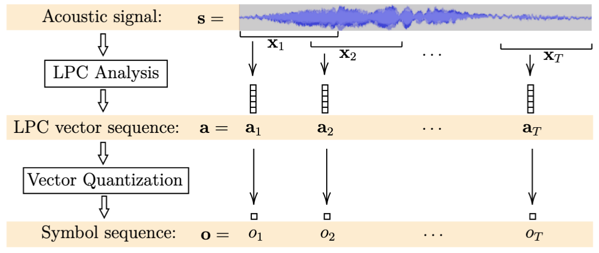
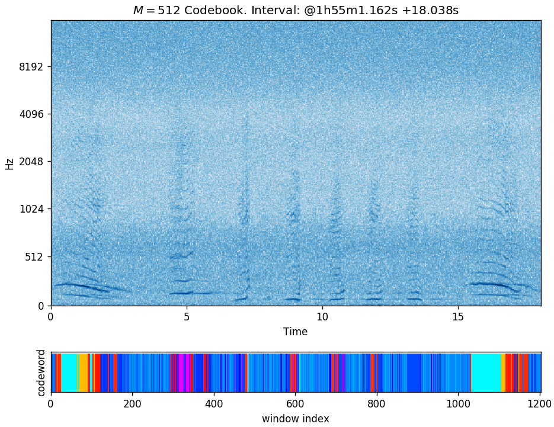

Feature Extraction¶
Linear Predictive Coding and Vector Quantization¶
We use linear predictive coding (LPC) [2, 3] for feature extraction. The predictive vectors arising from this analysis are then quantized [4] for the statistical modeling. This analysis is applied to consecutive, overlapping time windows where the signal in each window is assumed to be approximately stationary. The LPC analysis on a window \(x_t\) results in a vector \(a_t\), which in turn is quantized into a symbol from a codebook of size \(M\). Represented as such symbol sequences, we model the set of song unit instances in a probabilistic manner.

The LPC and VQ relevant parameters that we investigate are:
- \(P\): Order of prediction (length of each vector \(a_t\))
- \(W\): Analysis window size (duration of each \(x_t\))
- \(O\): Analysis window offset
- \(M\): Codebook size (number of observable symbols)
Codebook Generation and Evaluation¶
To support the vector quantization step, we run a variant of the \(k\)-means algorithm for clustering where an LPC based measure of distance (distortion) is used [4]. We generate codebooks of various sizes and evaluate the following metrics:

where \(d(a, b)\) is the distance or distortion between two LPC vectors, \(A\) is the set of training vectors, \(M\) is the size of the codebook, and \(c_m\) are the centroids of the codebook. The plot in the right-hand side of the figure above -captured from one of the runs we performed- shows the typical behaviour of these metrics as functions of the codebook size \(M\).
Quantization example¶
The following is the visualization of a quantization example using a codebook of size \(M = 512\) on a ~18s interval:

The figure shows:
- Spectrogram of the selected interval.
- Corresponding assigned codeword per time window displayed with an arbitrary color mapping.
- The window offset used was 15ms resulting in about 1200 windows for this interval. (Window size is 45ms.)
- Qualitatively, although not strictly required, we expect to see similarly colored areas when comparing regions with similar acoustic content, as seems to be well illustrated in the example above. (In general, this does not have to be the case as there is no predetermined ordering of the codewords in the associated codebook.)